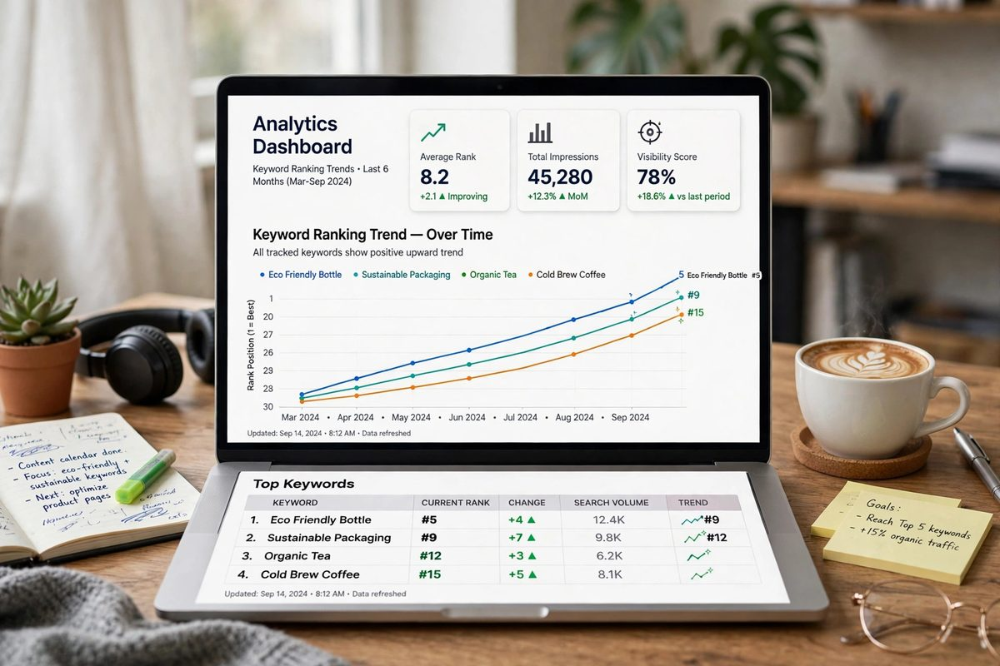
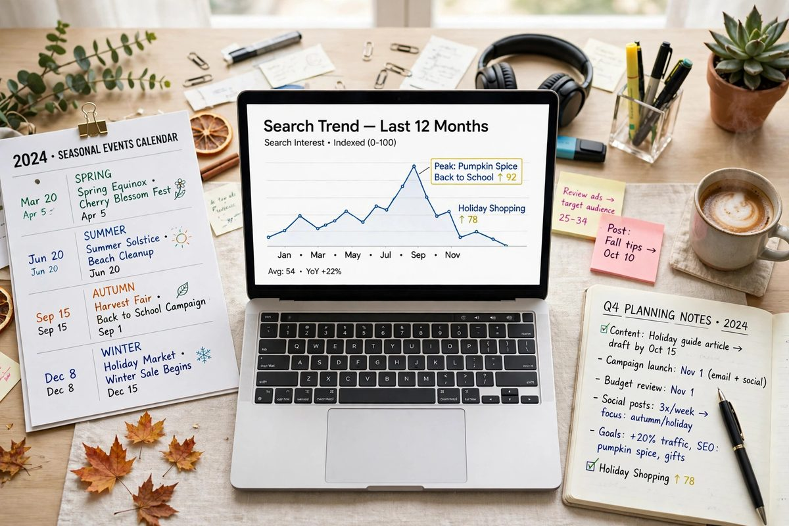
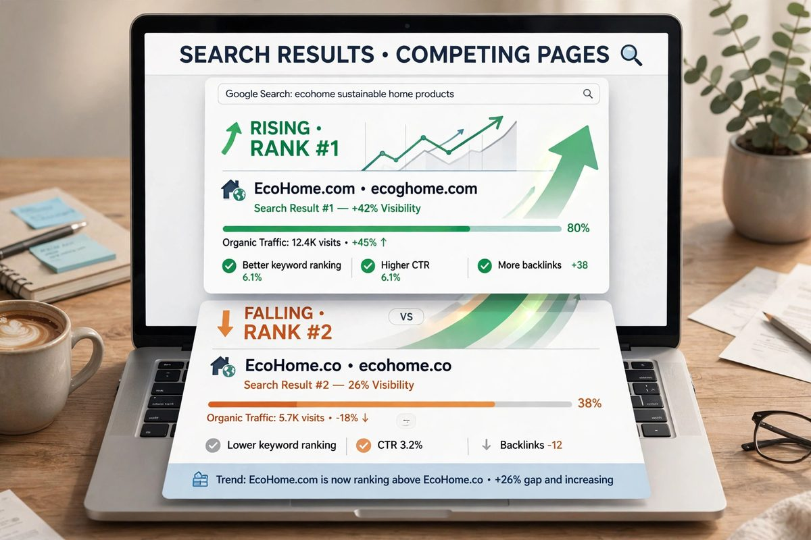
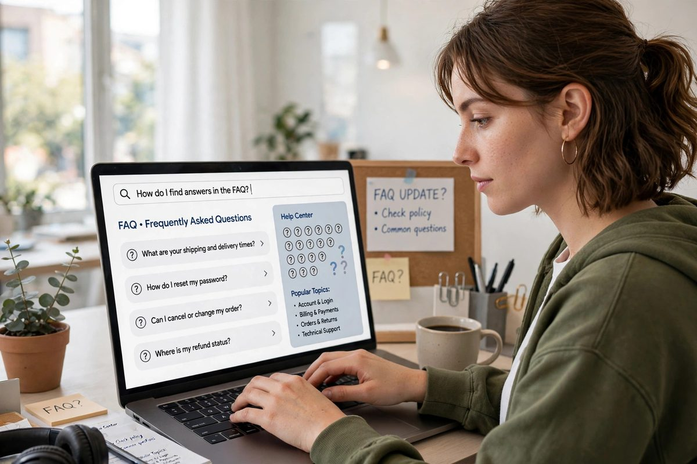
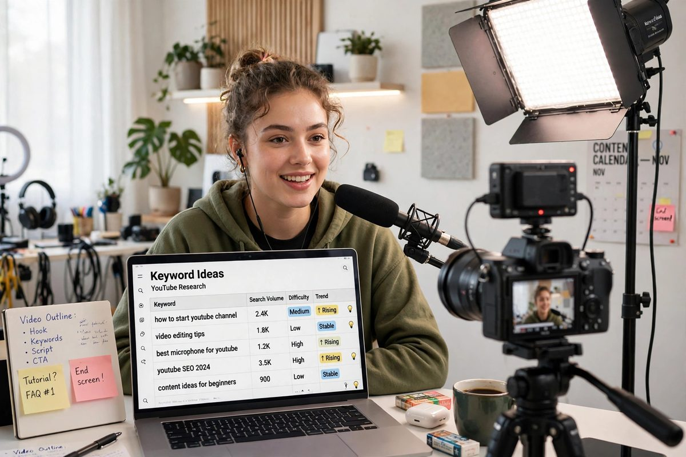

Keyword Finder — Find Keywords That Bring Visitors
Free, browser-based keyword tools and plain-English SEO guides. No account, no upload.
Keyword Idea Generator
Enter a seed keyword and get grouped keyword ideas, generated in your browser. No data is sent anywhere.
All tools
Long-Tail Keyword Builder
Build long, specific keyword phrases from a seed.
Keyword Grouper
Group a pasted keyword list by topic.
Keyword Difficulty Guide
Learn difficulty factors and estimate a score (guide only).
Search Intent Classifier
Classify keywords as informational, commercial, transactional or navigational.
Guides — keyword research, explained

How to Find Keywords for Beginners: A Simple Start
New to keyword research? Learn what keywords are, where to find them, and how to pick the first ones for your site.
Long-Tail Keywords: The Easy Wins Most Sites Ignore
Long, specific phrases bring fewer searches but more ready visitors. Learn to find and use long-tail keywords well.

Keyword Difficulty Explained: What It Means and How to Judge It
Difficulty scores look simple but hide a lot. Learn what makes a keyword hard, how to judge it yourself, and when to compete.

Search Intent: How to Tell What the Searcher Really Wants
The same words can mean four different things. Learn to read search intent and match your page to it.

Free Keyword Research Tools: What to Use When You Start
You do not need a paid subscription to find good keywords. These free tools and methods cover the basics well.

How to Track Keyword Rankings Without Obsessing Over Them
Rankings move daily. Learn a calm, useful way to track them, spot real trends, and act on what you see.

Local Keywords: How to Be Found by People Nearby
If your customers are local, your keywords should be too. Learn to find and use location-based search phrases.

Seasonal Keywords: Plan Content for Peaks Before They Arrive
Some searches spike once a year. Learn to spot seasonal keywords and publish in time to catch the peak.
Competitor Keyword Research: Learn from Sites That Already Rank
Your competitors have already done the research. Learn to find the keywords they rank for and use the gaps they left.

Keyword Mapping: Match Every Keyword to the Right Page
One keyword, one page. Learn to map keywords to pages so your site is organised and pages do not compete with each other.

How to Avoid Keyword Cannibalization on Your Site
When two of your own pages compete for the same keyword, both lose. Learn to spot it and fix it.

Question Keywords: Turn Real Questions into Traffic
People search in questions. Learn to find question keywords and answer them in a way that ranks and helps.
Keyword Volume vs Competition: How to Balance Both
High searches with high competition, or low searches with low competition? Learn to choose keywords that are worth your effort.

Niche Keyword Ideas: Find Phrases in a Small Market
A small niche means less competition and more loyal readers. Learn to find keywords that fit a narrow topic well.

Ecommerce Keywords: Find Phrases That Lead to Sales
Shoppers search differently from readers. Learn the keywords that bring buyers, not just browsers, to a store.

YouTube Keywords: Find Phrases People Search for on Video
YouTube is a search engine too. Learn to find video keywords, use them in titles, and get your videos found.

Keyword Clusters: Group Keywords into Topics That Rank
One topic, many keywords. Learn to build clusters that make your site an authority instead of a pile of single pages.
How to Refresh Old Content with New Keywords
Old pages can rank again. Learn to update them with new keywords, fresh facts and better answers instead of starting over.
Keyword Mistakes Beginners Make (and How to Avoid Them)
The same errors cost beginners months. Learn the most common keyword mistakes and the simple habits that avoid them.

How to Build a Keyword List for Your Blog
A good keyword list is a content plan. Learn to build one that covers your topics, avoids duplicates, and lasts for months.